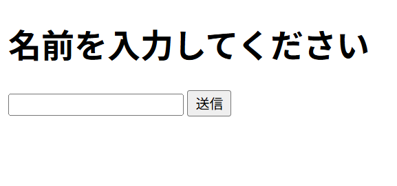
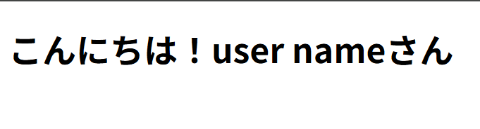

「入力フォーム作成」
目的：getを使ってみる
イメージ


HTML
<h1>名前を入力してください</h1>
<form action="result.php" method="get">
<input type="text" name="username">
<input type="submit" value="送信">
</form>
メモ:<>をタグとして認識されてしまった
解決法:
①HTMLエスケープ特殊文字の使用
②HTMLにJavaScriptで外部ファイルとして読み込む
③Markdown形式で書く
PHP
<?php
$username = $_GET["username"];
echo "<h1>こんにちは！" . $username . "さん</h1>";
>